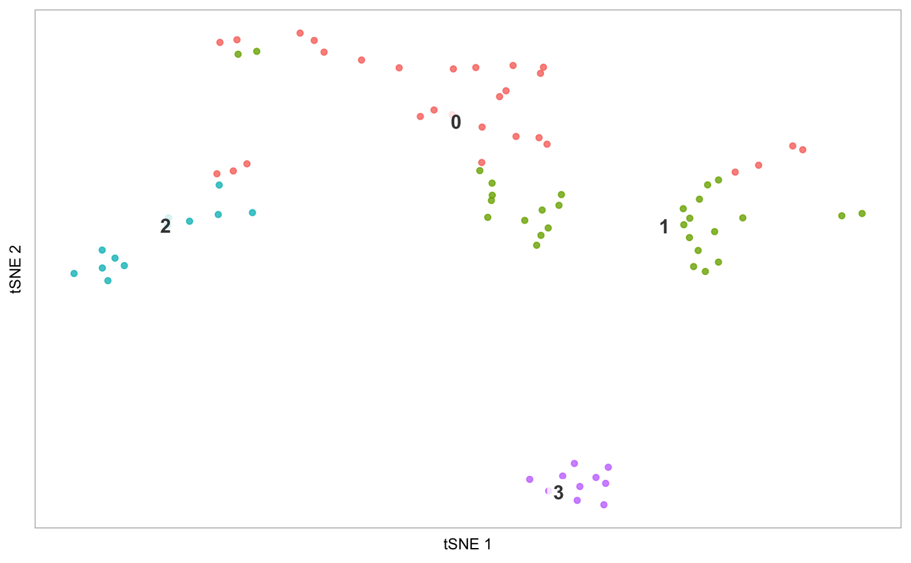
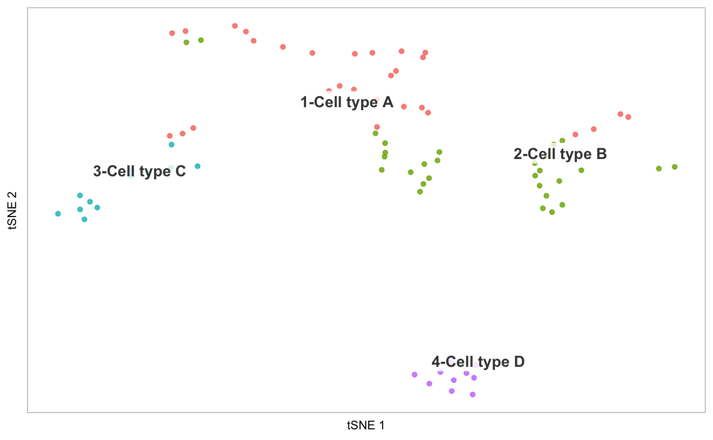
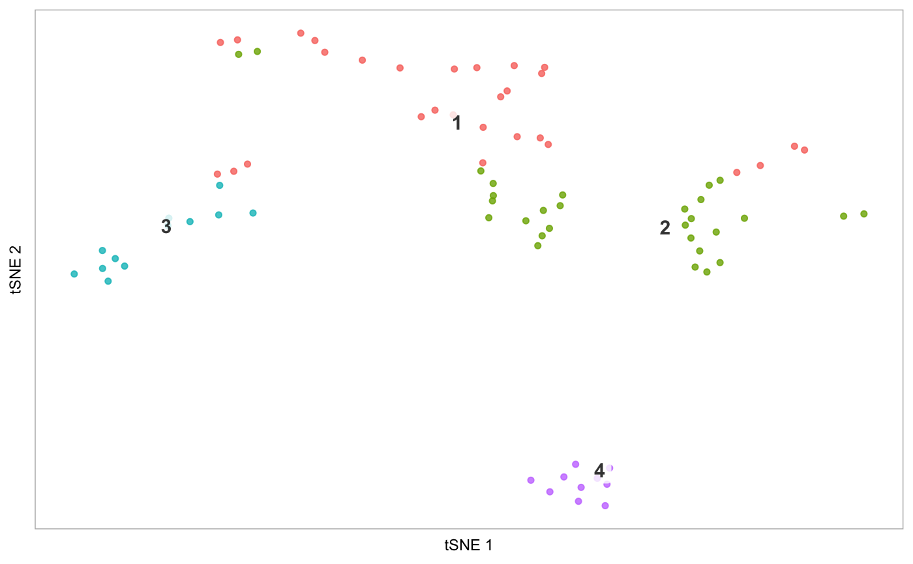
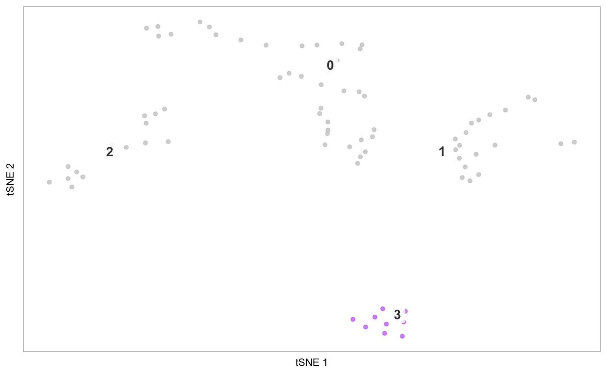
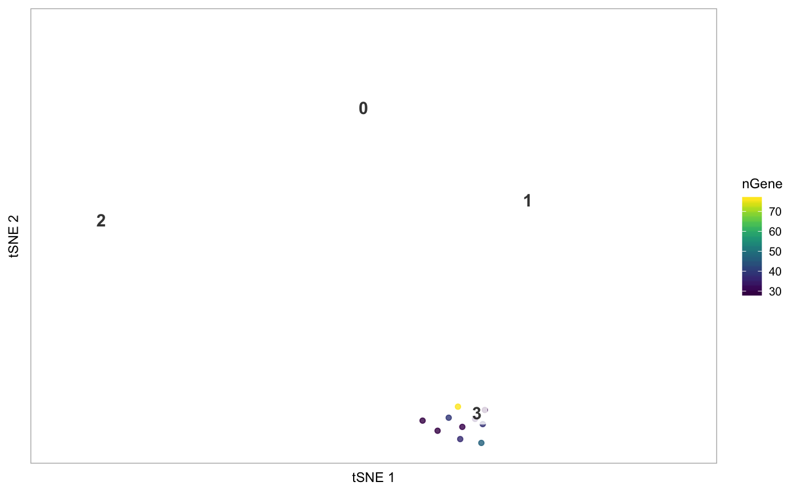

R/visualization.R
plot_dr.RdPlot a reduced dimensionality embedding for a Seurat object, colouring by cluster or arbitrary variables.
plot_dr(seurat, reduction = "tsne", colour_by = NULL, colours = NULL, colour_by_type = "discrete", label = TRUE, point_size = ifelse(length(seurat@cell.names) > 300, 0.6, 1.3), alpha = 0.8, legend = ifelse((is.null(colour_by)) && (label), FALSE, TRUE), label_repel = TRUE, label_size = 4, highlight_cells = NULL, show_all_cells = TRUE, order_by = NULL, clusters_to_label = NULL, hide_ticks = TRUE, title = NULL, label_short = FALSE, na_colour = "gray80", limits = NULL, constrain_scale = TRUE, hide_axes = FALSE, dim1 = 1, dim2 = 2, border_colour = NULL, border_size = NULL) tsne(seurat, ...) pca(seurat, ...) umap(seurat, ...) phate(seurat, ...)
| seurat | Seurat object, where Seurat::RunTSNE() has been applied |
|---|---|
| reduction | String, specifying a lot of |
| colour_by | (Optional) String, specifying the column in |
| colours | (Optional) Character vector of colours for points. If |
| colour_by_type | (Optional) String, one of "discrete" or "continuous".
If specifying |
| label | Logical, whether to plot cluster labels. Default: TRUE |
| point_size | Numeric, size of points in scatter plot. Default: 0.6 for datasets with < 300 cells, and 1.3 for datasets with otherwise. |
| alpha | Numeric, fixed alpha value for points: Default: 0.8 |
| legend | Logical, whether to plot legend. Default: FALSE if |
| label_repel | Logical, if |
| label_size | Numeric, controls the size of text labels. Default: 4. |
| highlight_cells | Character vector of cell names if only a subset of cells should be
coloured in the plot (these should correspond to seurat@cell.names). Default: Plot all cells.
See the argument |
| show_all_cells | Logical. When passing cells to |
| order_by | String, corresponding to a column in |
| clusters_to_label | (Optional.) If |
| hide_ticks | Logical, whether to hide axis ticks, i.e. both the text and the small lines indicating the breaks along the x- and y-axes. Default: FALSE |
| title | (Optional) String specifying title. |
| label_short | (Optional/Experimental!!) Logical, if TRUE, assumes cluster
names (at seurat@ident) consist of a prefix and a suffix separated by a non-alpha
numeric character ( |
| na_colour | String, specifying the colour (built-in or hex code) to use to
plot points which have an NA value, for example
in the variable specified in |
| limits | Numeric vector of length two providing the lower and upper limits of the colour scale, if colouring by a continuous variable. Default: min and max of the values the variable takes on in the data. |
| constrain_scale | Logical, if plotting a subset of cells, whether to use the limits of the tSNE embedding computed on the whole dataset (useful for constraining scales across plots while only plotting specific cells). Default: TRUE |
| hide_axes | Logical, whether to hide axis labels. Default: TRUE |
| dim1 | Numeric, dimension of embedding to use for x-axis. Default = 1. |
| dim2 | Numeric, dimension of embedding to use for y-axis. Default = 2. |
A ggplot2 object
tsne: Plot a tSNE embedding
pca: Plot a PCA embedding
umap: Plot a UMAP embedding
phate: Plot a PHATE embedding
tsne(pbmc)# Demonstrate label_short: # Set cluster IDs to be too long pbmc2 <- pbmc levels(pbmc2@ident) <- c("1-Cell type A", "2-Cell type B", "3-Cell type C", "4-Cell type D") tsne(pbmc2)# Plot the prefixes only tsne(pbmc2, label_short = TRUE)# Plot the # of genes for only cells in cluster 3, but display all cells on the plot tsne(pbmc, highlight_cells = whichCells(pbmc, clusters = 3), colour_by = "nGene", show_all_cells = FALSE, colours = viridis::viridis(100), colour_by_type = "continuous")